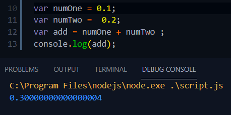
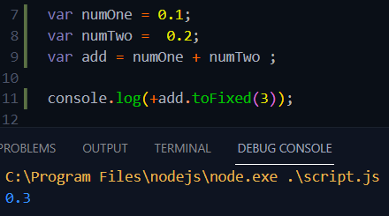

কোন কিছু যোগ বা বিয়গ করতে হলে , সংখ্যা গুলির শেষে এবং শুরুতে double quotation ব্যাবহার করা লাগে না ।
programming language এর কিছু সমস্যা আছে যেমন

ঠিক এই সমস্যা টা হয় যখন দুইটা variable এর মান যাতা ক্রমে 0.1 and 0.2 এবং এদেরকে যোগ করা হয় ।
তো এই সমস্যা থেকে বাঁচতে হলে নিচের নিয়ম ফলো করতে হবে ।
